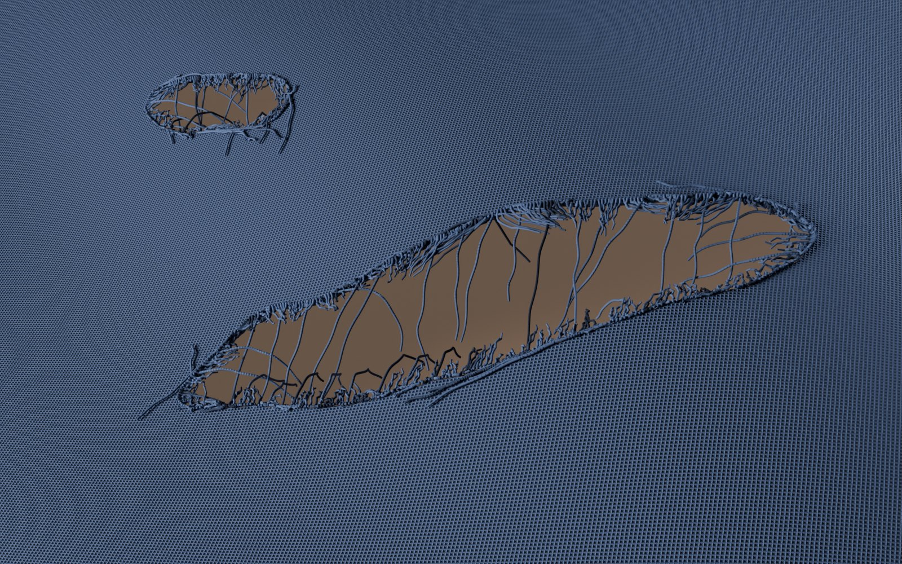
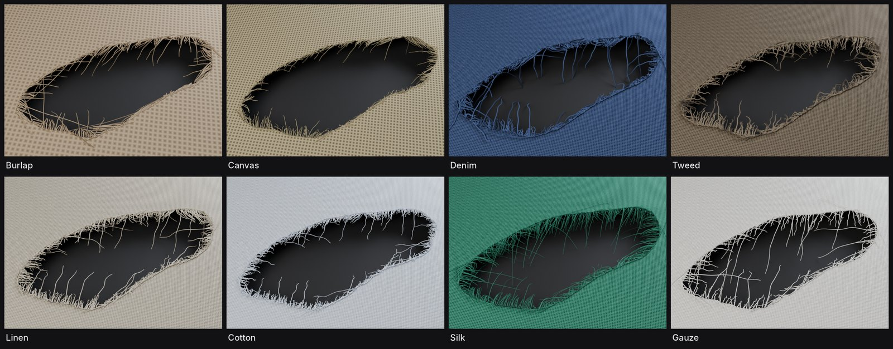
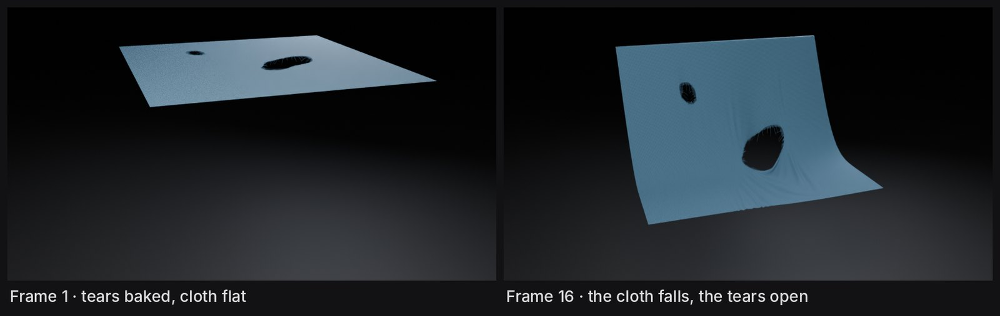
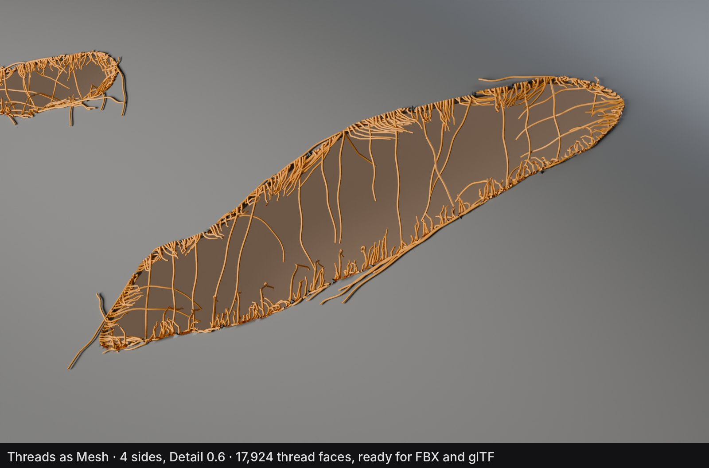
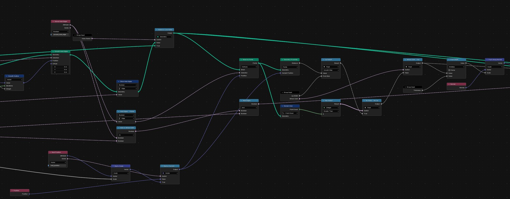
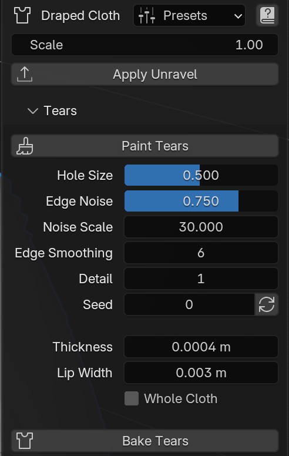

A Blender extension for torn cloth. You paint where the cloth should tear, and Unravel cuts the holes, thickens their edges and grows frayed threads around them.
The systems are built in Geometry Nodes, with a Python add-on on top for the panel, the presets and the steps that need real mesh edits. It's free and open source, and published on Blender Extensions, so it can be installed from inside Blender. The code is on GitHub, and the latest version can be downloaded from its releases page.

How it fits together
Everything stays live until you choose to bake or apply, and both can be undone.
Presets
Eight presets set the tears and both thread layers to read like a type of cloth, from coarse burlap to fine silk. I tuned them by eye against renders, aiming for something believable rather than dramatic. Presets only change the look, so your painted tears are never touched.

Simulation and export
Live tears are a modifier on top of the cloth, so a cloth simulation would never see the holes. Bake Tears cuts the holes into the mesh itself, so the simulation moves the torn cloth properly. The thickness, threads and strands stay live and follow the moving cloth, because they're worked out at the cloth's rest shape and then carried onto the deformed surface.

Apply Unravel turns everything into plain objects for export. Threads become either hair curves, for Blender, Alembic and USD, or a light tube mesh for FBX, glTF and game engines. On rigged cloth, the thread mesh is given the cloth's bone weights so it bends with the rig. The original setup is kept in a hidden backup, and Restore brings it all back.

Technical breakdown
The main decisions behind Unravel, and why I made them the way I did.
- Nodes first, Python where needed
- All the geometry is built in Geometry Nodes, so everything stays live, non-destructive and open to inspect in the node editor. Python only does what nodes can't: the panel, the presets, and the real mesh edits behind Bake and Apply. Keeping the logic in nodes means an artist can follow or tweak it without reading code.
- Tears are painted
- A tear is a vertex group you weight-paint, because every artist already knows how, and the paint keeps working if the mesh changes. Each face gets a score from its paint plus noise, and faces above a threshold are cut. New open edges are found by comparing against the cloth's original border, so the outer edge of the cloth is never mistaken for a tear.
The tear pipeline, from paint to a solid torn edge.
- Lip and walls
- The lip comes from the distance to the hole edges. A smooth falloff over Lip Width pushes the surface out along its normal, and walls join it to a back layer, so the torn edge reads as solid cloth rather than a paper-thin cut.

- Threads follow the weave
- Roots are spaced along the hole outlines. Each thread then takes its direction from the UVs, along the warp or the weft, whichever runs across the tear, which is how real cloth unravels. That's why Unravel asks for UVs.
- One system, used twice
- Fray and strays are the same node group on two modifiers with different settings, so there's one system to maintain and every fix lands in both. Clumping pulls threads towards a few random guide threads, curl is a helix around each thread, frizz is noise, and droop grows towards the tip.
- Bridges
- A share of the threads look across the hole with a raycast. If the far edge is close enough, the thread spans the gap and sags in the middle, the way threads hang across a real tear.
- Surface contact
- Threads that would sink into the cloth are lifted back onto its surface, but only within a set depth, so threads hanging behind the cloth on purpose are left alone.
- Drawn strands
- A curve you draw on the cloth becomes a twisted bundle of fibres. It remembers its spot on the rest shape and its height above the surface, so it follows the cloth when it moves.
- Rest space
- Threads grown on a deforming surface flicker, because their roots move from frame to frame. Roots and the lip are worked out once on the cloth's rest shape, then carried onto the moving surface. The thread count stays steady and the roots stay within half a millimetre of the cloth.
- Baking only the holes
- A cloth simulation can't see holes made by a modifier, but baking everything made the thickness drift up to 40 mm from the cloth as it moved. So Bake Tears cuts only the holes into the mesh and records which edges were hole edges. The thickness is rebuilt live from that record on top of the simulation.
- Scale
- Thread sizes only look right at real size, and not every scene is in metres. Each node group shrinks the cloth to real units at the start and grows the result back at the end, with thread radius scaled separately, since moving curves doesn't change their thickness. The value is set from the scene's unit scale automatically.
- Export in place
- Apply swaps the cloth's own mesh for the result instead of making new objects, so names, parenting and rig links stay intact for export. For engines that can't read hair, a small node group turns the threads into tubes with UVs and a choice of sides and points. Thread tubes get the cloth's bone weights through a data transfer from the nearest face. The originals go into a hidden backup collection, which is what makes Restore possible.
- Performance
- Viewport Density hides a share of the threads while you work, and renders always show them all. Detail only subdivides the cloth when you ask for finer edges.
- Black spots
- Some presets showed dark spots along the tear edges in renders. I traced them to z-fighting between two surfaces at the outer rim of the lip and fixed it with a small offset.
- Version stamps
- Each node group carries a version stamp. If a file was made with an older Unravel, the panel offers to update its node groups while keeping every setting and the paint.
The panel
Everything lives in one tab in the sidebar. Paint Tears switches straight to weight painting on the right group, and Done Painting switches back. Every seed has a button for a quick new variation, every setting has a tooltip, and the help button opens a short guide.
All the actions are also in the Object menu and in search, and the Make Unravel step is in the right-click menu.
